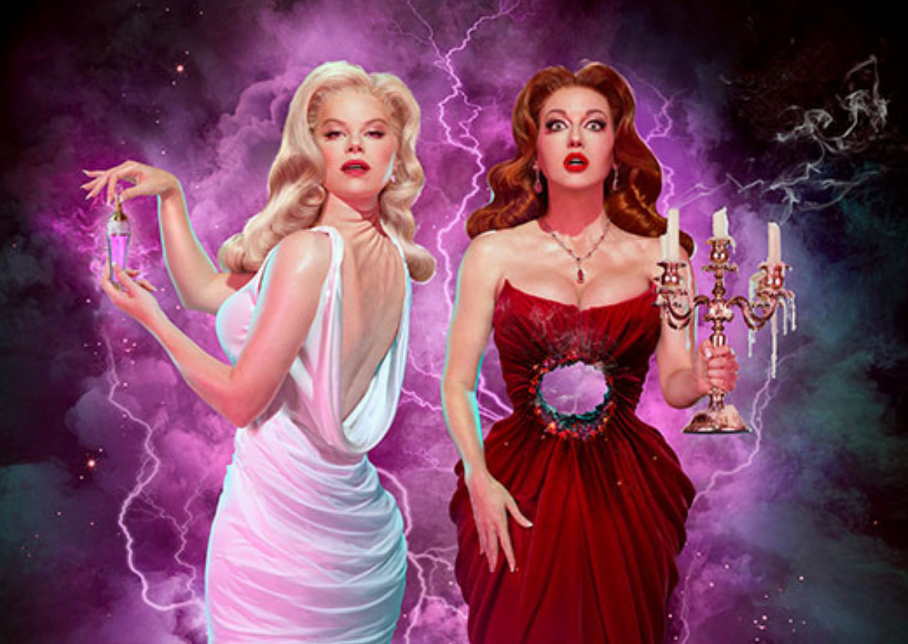

“Death Becomes Her” estreia na Broadway com Megan Hilty e Jennifer Simard liderando o elenco

O musical "Death Becomes Her", inspirado no filme cult de 1992, "A Morte Lhe Cai Bem", estreou oficialmente na Broadway no último dia 21 de novembro, no Lunt-Fontanne Theatre.
A produção traz no elenco principal Megan Hilty (conhecida por Smash) e Jennifer Simard (Mean Girls), que dão vida às icônicas rivais Madeline Ashton e Helen Sharp.
Completando o elenco principal estão Christopher Sieber como Ernest Menville, o ator preso entre as disputas das protagonistas, e Michelle Williams como Viola Van Horn, todos reprisando seus papéis da temporada de testes pré-Broadway em Chicago no início deste ano.
A trama e a transição do filme para o palco
O musical acompanha Madeline e Helen, duas rivais cuja obsessão pela beleza e juventude eterna as leva a uma poção mágica que promete mantê-las jovens para sempre, mas não sem efeitos colaterais mortais – literalmente. Baseado no filme estrelado por Meryl Streep e Goldie Hawn, a montagem revive momentos memoráveis, como a icônica cena em que a cabeça de Madeline (Streep) gira completamente para trás e o buraco no torso de Helen (Hawn), usando tecnologia teatral inovadora.
Produção e Recepção
O projeto de transformar o filme em musical estava em desenvolvimento desde 2017, inicialmente com Kristin Chenoweth cogitada para o papel de Madeline. Com uma nova equipe criativa, o espetáculo finalmente chegou aos palcos e já está sendo aclamado por seu equilíbrio entre humor negro, efeitos visuais impactantes e performances vocais impressionantes.
O musical está programado para uma temporada inicial até agosto de 2025 e tem atraído um público diverso, entre fãs do filme original e novos espectadores curiosos.
Serviço
"Death Becomes Her" – A Morte Lhe Cai Bem
Local: Lunt-Fontanne Theatre, Nova York
Estreia: 21 de novembro de 2024
Temporada inicial: até agosto de 2025
Ingressos: Disponíveis em broadway.com
Essa adaptação de humor ácido e visual deslumbrante promete ser um dos grandes sucessos da Broadway nos próximos anos!